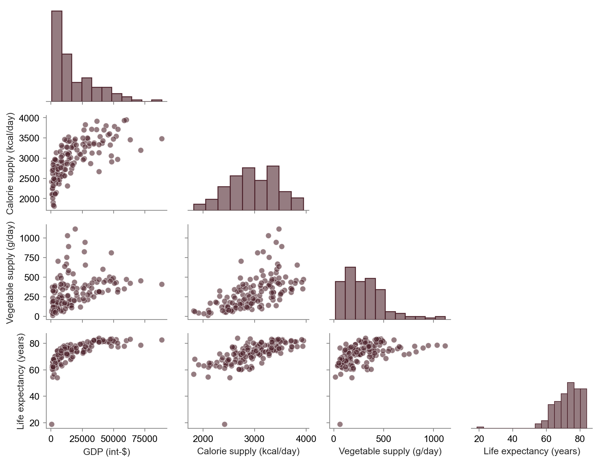
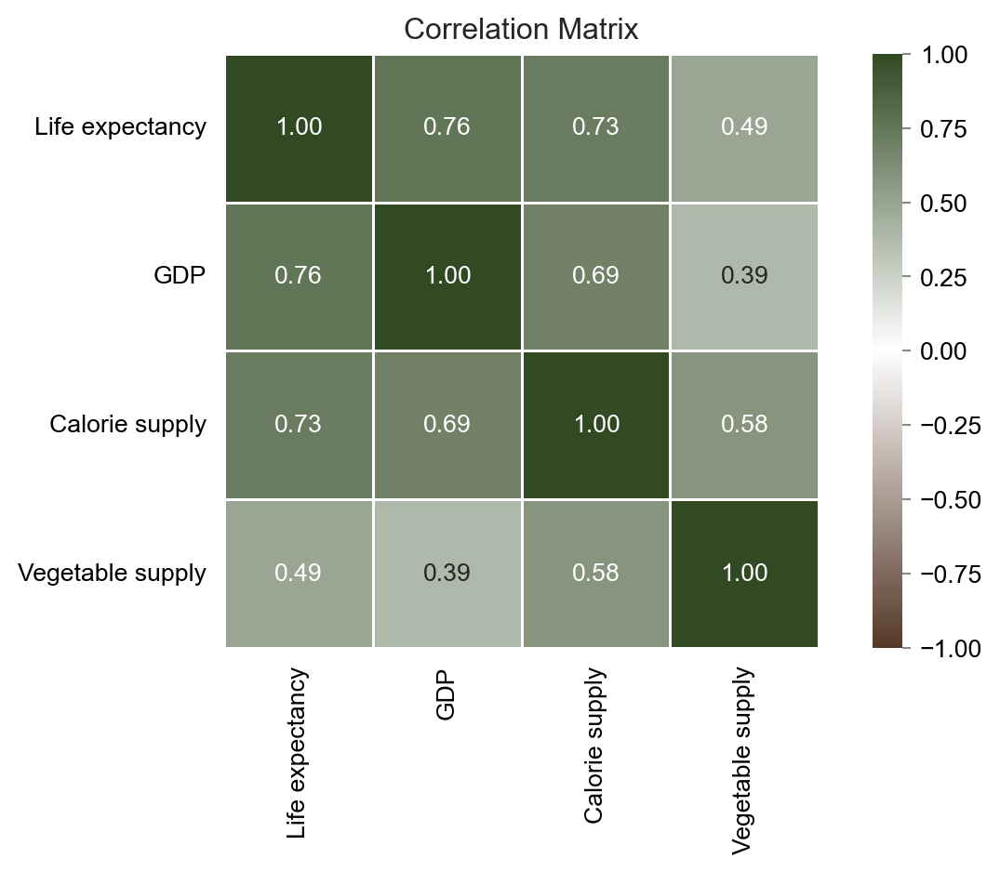
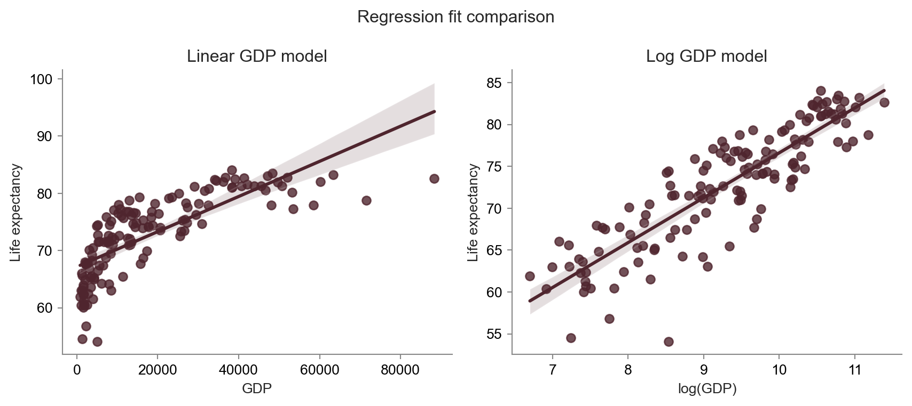
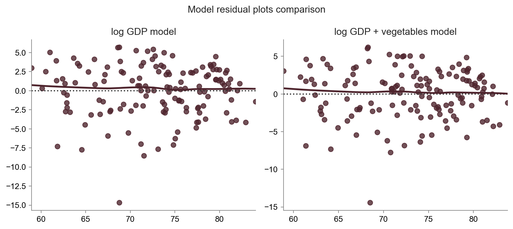
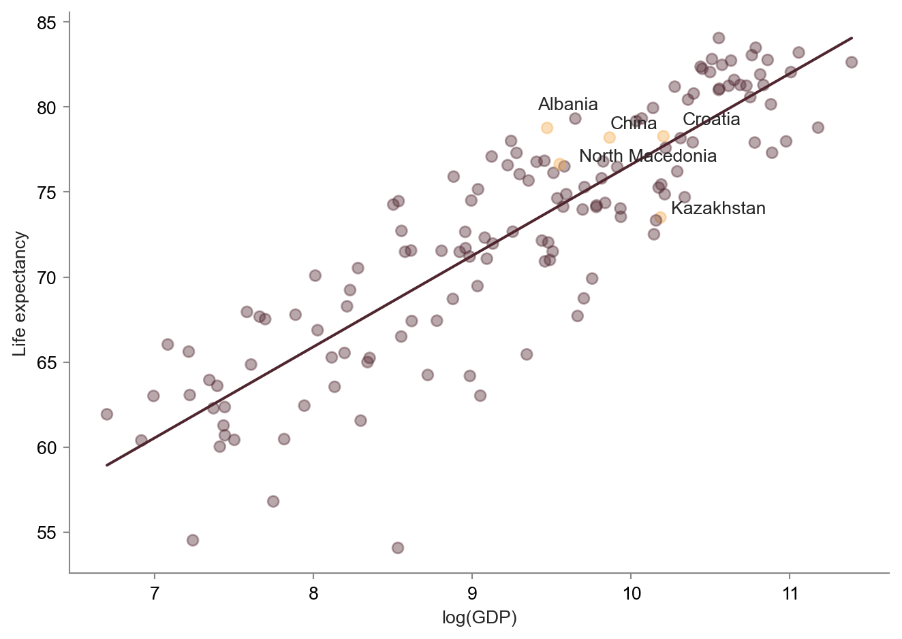

Life Expectancy Across Countries
Research questions
- What factors explain variation in life expectancy across countries?
- How big role does the economic situation of a country play in determining its life expectancy?
- Which factor, calorie supply or vegetable supply, has more influence over life expectancy in a country after controlling for GDP?
- Do countries with unusually high vegetable supply show better life expectancy results than their economic situation would suggest?
Data
All data used in the analysis comes from Our World in Data. Country-level indicators on health, GDP, and food supply were used. Each observation is a country year.
The following variables were analysed (units in brackets):
- life expectancy (years)
- GDP per capita, adjusted for inflation and differences in living costs between countries (international-$ in 2011 prices)
- calorie supply (kcal/day/capita)
- vegetable supply (kg/year/capita).
The dataset also includes also World Bank’s income group variable. It was not used in the final analysis as it did not add additional insights with a high enough level of statistical significance. In the future, it might be interesting to explore some of the relationships within different income groups.
The following data cleaning steps were applied:
- Only countries without missing values for years between 1992 and 2022 were used
- Data was filtered to the year 2022, which was the most recent year available
- Outlier country with very low life expectancy was removed (more discussion later in the report)
- Log conversion is applied to GDP due to observed non-linear relationships
- Vegetable supply is converted to a daily number to align with the calorie variable and to ease interpretation.
Exploratory analysis
Distributions and pairwise relationships between variables
We can observe very clearly a low life expectancy outlier in all plots. This data point comes from the Central African Republic, with the life expectancy of slightly below 19 years. The tragically low number is caused by an ongoing humanitarian crisis driven by armed conflict in the country, widespread violence against civilians, and economic collapse. As these factors are heterogeneous to this country’s situation, the observation was removed from further analysis.
GDP spans between 811 $-international in Liberia to almost 90,000 $-international for Norway, with an average of 18,412 $-international and a strong positive skew and a fat right tail. Calorie supply spans between 1,814 kcal/day in Lesotho to 3,947 kcal/day in Ireland, with an average of 2,977 kcal/day. The observed distribution is rather symmetric with a slight skew to the left. Vegetable supply spans 14 g/day in Chad to 1,115 g/day in China. The average daily vegetable supply per capita is 308 g. We can also observe a positive skew in the distribution with a number of high positive outliers which will be of interest later in the analysis. Finally, life expectancy spans from 54 years in Nigeria (after excluding the Central African Republic) to 84 years in Japan with an average of 72 years and 10 months. The distribution has a mild left skew.
All variables appear to be at least mildly positively correlated. The relationship between GDP and life expectancy seems not to be linear and shows signs of diminishing returns, which is confirmed later by a logarithmic model fit. We can also notice the presence of a few positive vegetable supply outliers in the scatterplots. They seem to be countries with low to medium GDP and medium-high life expectancy. Calorie supply appears to be positively linearly related to life expectancy.
Correlations between variables

All variables are positively correlated with life expectancy, with the strongest correlation observed for GDP (r=0.76), followed by calorie supply (r=0.73). Calorie supply is also strongly correlated with GDP (r=0.69), suggesting that these variables may capture overlapping aspects of economic development and living standards. As a result, including both variables in the same regression model may introduce multicollinearity, reducing the ability to distinguish their independent effects on life expectancy. In contrast, vegetable supply exhibits only a moderate correlation with GDP (r=0.39), indicating that it may provide additional information beyond income levels alone. These observations are largely consistent with the results obtained from the regression models presented in the next section.
Model fitting
Life expectancy and GDP
Linear model vs. log model

There seems to be a strong positive relationship between economic development and life expectancy across countries. A linear specification between GDP per capita and life expectancy explains a substantial portion of cross-country variation, but the fit improves considerably when GDP is log-transformed (in terms of model predictive power, \(R^2\) increases from 0.59 to 0.76). This suggests that the relationship exhibits diminishing returns: increases in income are associated with much larger improvements in life expectancy among lower-income countries than among wealthier countries.
Log model results
| coef | std err | t | P>|t| | [0.025 | 0.975] | |
|---|---|---|---|---|---|---|
| Intercept | 23.0679 | 2.374 | 9.719 | 0.000 | 18.375 | 27.761 |
| log_gdp | 5.3546 | 0.254 | 21.116 | 0.000 | 4.853 | 5.856 |
Looking at the model coefficients, there is a signiffincant positive relationship between GDP and life expectancy of a country, and the relationship seems to be proportional.
The log-linear model explains approximately 76% of cross-country variation in life expectancy. The coefficient on log GDP is positive and statistically significant, and according to it, a doubling of GDP per capita is associated with approximately 3.7 years of increase in life expectancy.
Adding vegetable supply slightly improves the log(GDP) model
| coef | std err | t | P>|t| | [0.025 | 0.975] | |
|---|---|---|---|---|---|---|
| Intercept | 24.8101 | 2.442 | 10.159 | 0.000 | 19.981 | 29.639 |
| log_gdp | 5.0439 | 0.280 | 17.984 | 0.000 | 4.489 | 5.598 |
| daily_vegetables_supply_kg_capita | 3.7110 | 1.536 | 2.417 | 0.017 | 0.674 | 6.748 |
Out of the two multivariate models (log(GDP) with calorie supply and log(GDP) with vegetable supply), the model including vegetable supply seemed to present a slightly bigger improvement to the overall model fit. However the improvement remained modest, with \(R^2\) increasing from 0.762 in the original log(GDP) model to approximately 0.772 in the model with vegetable supply included. These results suggest that GDP already explains most of the variation in life expectancy across countries.
Additionally, looking at the coefficient estimates, vegetable supply of a country seems to be positively associated with life expectancy, even after controlling for GDP, with a positive confidence interval and a statistically significant p-value. In contrast, calorie supply did not remain statistically significant after controlling for GDP. This is in line with the correlation matrix results suggesting that the calorie supply may largely reflect economic development and living standards of a country. On the other hand, while the additional explanatory power is limited, the results of this model suggest that the vegetable supply may capture aspects of diet quality that can’t be explained by the economy alone.
Based on the estimated coefficient, an increase of 100 g in daily vegetable supply per capita is associated with an increase in life expectancy of approximately 0.37 years (around 4.5 months), holding GDP constant.

Residual plots confirm the modest improvement in the model fit after including vegetable supply. The residuals appear slightly more evenly distributed around zero, although some heteroskedasticity and unexplained variation remain.
Outlier investigation - countries with high vegetable consumption

Although only a small number of countries are classified as extreme positive vegetable supply outliers under the IQR criterion, these observations appear to show some geographic and cultural clustering (they lie either in the Balkans or Central and East Asia). This may suggest that an unusually high vegetable supply might partly reflect regional dietary traditions rather than economic development alone. However, the very small number of observations limits the ability to draw broader conclusions.
Several of these countries also lie above the relationship predicted by the GDP-only model, indicating somewhat higher life expectancy than their economic situation alone would suggest. However, the pattern is neither strong nor consistent enough to support broader conclusions regarding the independent effect of vegetable supply on life expectancy. Given the very small number of observations, the results should therefore be interpreted as exploratory rather than conclusive.
Conclusions
- There seems to be a positive relationship between the economic development of a country, measured using GDP, and health outcomes in a country, measured by life expectancy, and the relationship appears to exhibit diminishing returns.
- Vegetable supply may be able to capture aspects of diet quality that can’t be explained by the economy alone, and while the additional explanatory power is limited, it seems to contribute information associated with country health outcomes beyond economic development.
Limitations and future work
This analysis is observational and cross-sectional and therefore does not support causal conclusions. While vegetable supply is positively associated with life expectancy after controlling for GDP, the observed relationships may also reflect omitted factors such as healthcare quality, education, inequality, sanitation, smoking prevalence, or broader dietary patterns.
Additionally, the analysis relies on country-level averages, which may conceal substantial within-country variation in both nutrition and health outcomes. Future work could extend the analysis by incorporating additional socioeconomic and health variables, exploring longitudinal trends across years, or comparing relationships within different income groups and geographic regions.
Reproducibility
All code used for data cleaning, analysis, and report generation is available on GitHub: